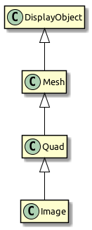
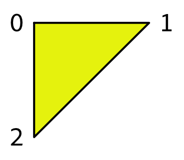
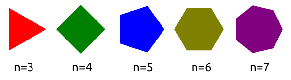
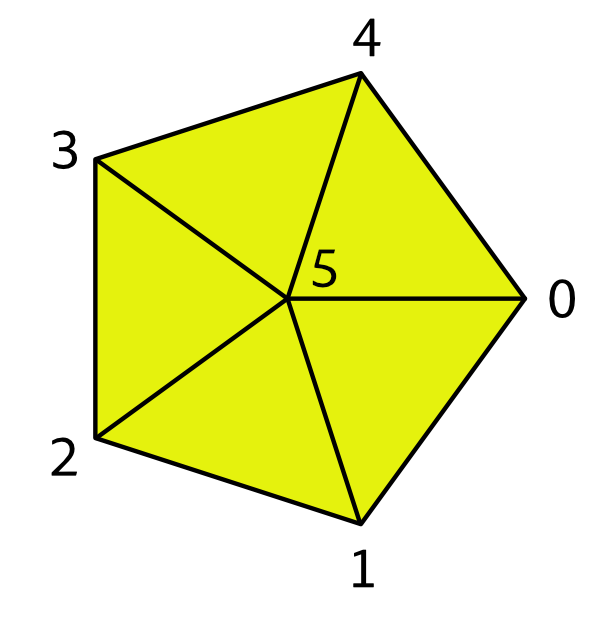
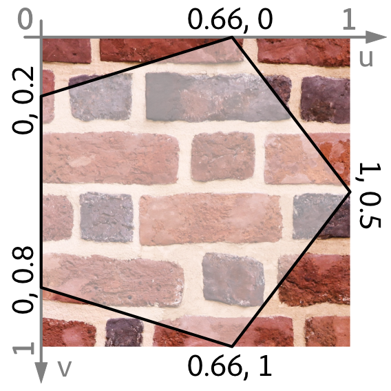
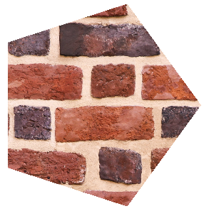
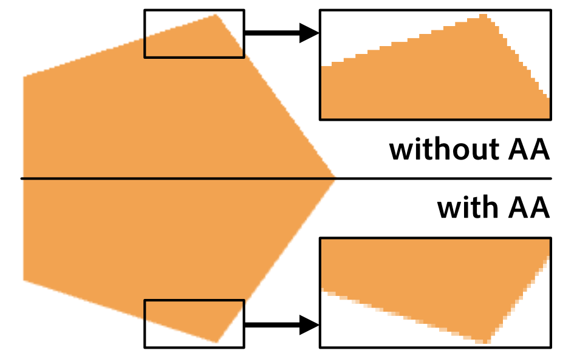
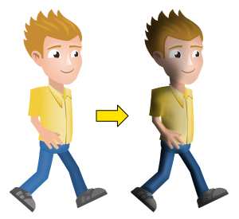

Meshes
Mesh is the basic building block of all tangible display objects. By "tangible", I mean a "leaf" object in the display list: an object that is not a container but is rendered directly to the back buffer. Since it is so important, I want to look at this class in a little more detail.
In a nutshell, a Mesh represents a list of triangles to be rendered via Stage3D. It was mentioned a few times already, since it’s the base class of Quad and Image. As a reminder, here is the class hierarchy we are talking about:
Mesh is not an abstract class; nothing prevents you from instantiating it directly. Here’s how:
var vertexData:VertexData = new VertexData();
vertexData.setPoint(0, "position", 0, 0);
vertexData.setPoint(1, "position", 10, 0);
vertexData.setPoint(2, "position", 0, 10);
var indexData:IndexData = new IndexData();
indexData.addTriangle(0, 1, 2);
var mesh:Mesh = new Mesh(vertexData, indexData);
addChild(mesh);As you can see, we first needed to instantiate two more classes: VertexData and IndexData. They represent collections of vertices and indices, respectively.
-
VertexData efficiently stores the attributes of each vertex, e.g. its position and color.
-
IndexData stores indices to those vertices. Every three indices will make up a triangle.
That way, the code above created the most basic drawing primitive: a triangle. We did this by defining three vertices and referencing them clockwise. After all, that’s what a GPU can do best: drawing triangles — lots of them.

Figure 1. The triangle we just created.
Extending Mesh
Working directly with VertexData and IndexData would be quite bothersome over time. It makes sense to encapsulate the code in a class that takes care of setting everything up.
To illustrate how to create custom meshes, we will now write a simple class called NGon. Its task: to render a regular n-sided polygon with a custom color.

Figure 2. These are the kinds of regular polygons we want to draw.
We want the class to act just like a built-in display object. You instantiate it, move it to a certain position and then add it to the display list.
var ngon:NGon = new NGon(100, 5, Color.RED); (1)
ngon.x = 60;
ngon.y = 60;
addChild(ngon);| 1 | The constructor arguments define radius, number of edges, and color. |
Let’s look at how we can achieve this feat.
Vertex Setup
Like all other shapes, our regular polygon can be built from just a few triangles.
Here’s how we could set up the triangles of a pentagon (an n-gon with n=5).

Figure 3. A pentagon and its vertices.
The pentagon is made up of six vertices spanning up five triangles. We give each vertex a number between 0 and 5, with 5 being in the center.
As mentioned, the vertices are stored in a VertexData instance. VertexData defines a set of named attributes for each vertex. In this sample, we need two standard attributes:
-
positionstores a two-dimensional point (x, y). -
colorstores an RGBA color value.
The VertexData class defines a couple of methods referencing those attributes. That allows us to set up the vertices of our polygon.
Create a new class called NGon that extends Mesh. Then add the following instance method:
private function createVertexData(
radius:Float, numEdges:Int, color:UInt):VertexData
{
var vertexData:VertexData = new VertexData();
vertexData.setPoint(numEdges, "position", 0.0, 0.0); (1)
vertexData.setColor(numEdges, "color", color);
for (i in 0...numEdges) (2)
{
var edge:Point = Point.polar(radius, i*2*Math.PI / numEdges);
vertexData.setPoint(i, "position", edge.x, edge.y);
vertexData.setColor(i, "color", color);
}
return vertexData;
}| 1 | Set up center vertex (last index). |
| 2 | Set up edge vertices. |
Since our mesh has a uniform color, we assign the same color to each vertex. The positions of the edge vertices (the corners) are distributed along a circle with the given radius.
Index Setup
That’s it for the vertices. Now we need to define the triangles that make up the polygon.
Stage3D wants a simple list of indices, with each three successive indices referencing one triangle. It’s a good practice to reference the indices clockwise; that convention indicates that we are looking at the front side of the triangle. Our pentagon’s list would look like this:
5, 0, 1, 5, 1, 2, 5, 2, 3, 5, 3, 4, 5, 4, 0
In Starling, the IndexData class is used to set up such a list. The following method will fill an IndexData instance with the appropriate indices.
private function createIndexData(numEdges:Int):IndexData
{
var indexData:IndexData = new IndexData();
for (i in 0...numEdges)
indexData.addTriangle(numEdges, i, (i+1) % numEdges);
return indexData;
}NGon constructor
This is actually all we need for our NGon class! Now we just need to make use of the above methods in the constructor. All the other responsibilities of a display object (hit testing, rendering, bounds calculations, etc.) are handled by the superclass.
class NGon extends Mesh
{
public function new(
radius:Float, numEdges:Int, color:UInt=0xffffff)
{
var vertexData:VertexData = createVertexData(radius, numEdges, color);
var indexData:IndexData = createIndexData(numEdges);
super(vertexData, indexData);
}
// ...
}That’s rather straight-forward, isn’t it? This approach works for any shape you can think of.
|
When working with custom meshes, also look at the Polygon class (in the |
Adding a Texture
Wouldn’t it be nice if we were able to map a texture onto this polygon, as well?
The base class, Mesh, already defines a texture property; we’re only lacking the required texture coordinates.
Through texture coordinates, you define which part of a texture gets mapped to a vertex. They are often called UV-coordinates, which is a reference to the names that are typically used for their coordinate axes (u and v). Note that the UV range is defined to be within 0 and 1, regardless of the actual texture dimensions.

Figure 4. The texture coordinates of the polygon are in the range 0-1.
With this information, we can update the createVertexData method accordingly.
function createVertexData(
radius:Float, numEdges:Int, color:UInt):VertexData
{
var vertexData:VertexData = new VertexData(null, numEdges + 1);
vertexData.setPoint(numEdges, "position", 0.0, 0.0);
vertexData.setColor(numEdges, "color", color);
vertexData.setPoint(numEdges, "texCoords", 0.5, 0.5); (1)
for (i in 0...numEdges)
{
var edge:Point = Point.polar(radius, i*2*Math.PI / numEdges);
vertexData.setPoint(i, "position", edge.x, edge.y);
vertexData.setColor(i, "color", color);
var u:Float = (edge.x + radius) / (2 * radius); (2)
var v:Float = (edge.y + radius) / (2 * radius);
vertexData.setPoint(i, "texCoords", u, v);
}
return vertexData;
}| 1 | The texture coordinates of the center vertex: 0.5, 0.5. |
| 2 | The origin of the n-gon is in the center, but the texture coordinates must be all positive.
So we move the vertex coordinates to the right (by radius) and divide them by 2 * radius to end up in the range 0-1. |
When a texture is assigned, the rendering code will automatically pick up those values.
var ngon:NGon = new NGon(100, 5);
ngon.texture = assets.getTexture("brick-wall");
addChild(ngon);
Figure 5. Our textured pentagon.
Anti-Aliasing
If you look closely at the edges of our n-gon, you will see that the edges are quite jagged. That’s because the GPU treats a pixel either within the n-gon, or outside — there are no in-betweens. To fix that, you can enable anti-aliasing: there’s a property with that name on the Starling class.
starling.antiAliasing = 2;The value correlates to the number of subsamples Stage3D uses on rendering. Using more subsamples requires more calculations to be performed, making anti-aliasing a potentially very expensive option. Furthermore, Stage3D doesn’t support anti-aliasing on all platforms.
| Full-screen anti-aliasing is available on all desktop platforms, except when using software rendering. |
Thus, it’s not an ideal solution. Luckily, however, the typical pixel-density of mobile devices is constantly on the rise. On modern, high end mobile phones, the pixels are now so small that aliasing is much less an issue than it was in the past.

Figure 6. Anti-Aliasing can smooth pixelated edges.
Mesh Styles
You now know how to create textured meshes with arbitrary shapes. For this, you are using the standard rendering mechanics built into Starling.
However, what if you want to customize the rendering process itself? The properties and methods of the Mesh class provide a solid foundation — but sooner or later, you will want more than that.
Coming to the rescue: Starling’s mesh styles.
Styles are the recommended way to create custom, high performance rendering code. In fact, all rendering in Starling is done via mesh styles.
-
A style can be assigned to any mesh (instances of the Mesh class or its subclasses).
-
Per default, the style of each mesh is an instance of the base MeshStyle class.
-
The latter provides the standard rendering capabilities of Starling: drawing colored and textured triangles.
To teach your meshes new tricks, you can extend MeshStyle. This allows you to create custom shader programs for all kinds of interesting effects. For example, you could implement fast color transformations or multi-texturing.
|
One of the most impressive samples of a style is the Dynamic Lighting extension. With the help of a normal map (a texture encoding surface normals), it can provide realistic real-time lighting effects. |
To use a style, instantiate it and assign it to the style property of the mesh:
var image:Image = new Image(texture);
var lightStyle:LightStyle = new LightStyle(normalTexture);
image.style = lightStyle;
Figure 7. The Dynamic Lighting extension in action.
Styles are extremely versatile; their possible applications are almost without limit. And since meshes with the same style can be batched together, you do not sacrifice performance in any way. In this respect, they are much more efficient than fragment filters (which serve a similar purpose).
The main downsides of styles are simply that they can only be assigned to a mesh (not, say, a sprite), and that they can only act within the actual mesh area (making things like a blur impossible). Furthermore, it’s not possible to combine several styles on one mesh.
Still: styles are a powerful tool that any Starling developer should be familiar with. Stay tuned: in the section Custom Styles, I will show you how to create your own mesh style from scratch, shaders and all!
|
If you’re still a little confused about the differences between a Mesh and a MeshStyle, think of it like this: the Mesh is nothing more than a list of vertices, and how those vertices spawn up triangles. A style may add additional data to each vertex and use it on rendering. The standard MeshStyle provides color and texture coordinates; a MultiTextureStyle might add an additional set of texture coordinates, etc. But a style should never modify the original shape of the object; it won’t add or remove vertices or change their positions. |